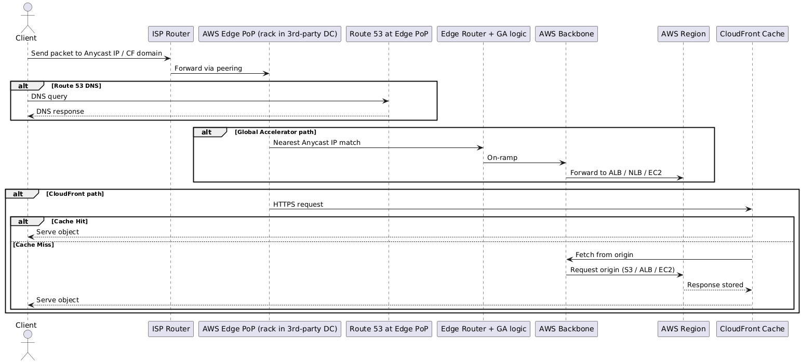

AWS Network Services By OSI Model
| OSI Layer | AWS Service | What It Does |
|---|---|---|
| L7 Application | CloudFront | Content Delivery Network (CDN) for caching and accelerating web traffic. |
| Route 53 | DNS resolution, domain registration, routing policies (latency, geo, failover). | |
| WAF | Web Application Firewall filtering Layer 7 attacks (SQLi, XSS). | |
| API Gateway | Expose/manage APIs, request/response routing. | |
| App Mesh | Service mesh for microservice-to-microservice communication. | |
| L6 Presentation | ACM (Certificate Manager) | Manages and deploys SSL/TLS certificates for encryption. |
| AWS Shield Advanced | DDoS protection including SSL/TLS-based attack mitigation. | |
| L5 Session | Site-to-Site VPN | IPSec tunnels for connecting on-prem to AWS securely. |
| Client VPN | VPN for end-users to securely connect into AWS resources. | |
| Direct Connect | Dedicated physical link for stable private connectivity into AWS. | |
| L4 Transport | Global Accelerator | Anycast routing to improve global TCP/UDP performance and availability. |
| Elastic Load Balancer – NLB | Balances TCP/UDP traffic at connection level. | |
| Elastic Load Balancer – ALB | Balances HTTP/HTTPS traffic (can inspect at L7, but transport at L4 too). | |
| Transit Gateway | Hub-and-spoke model for connecting multiple VPCs and on-premises. | |
| L3 Network | VPC | Logical isolated network with routing tables, subnets, ACLs. |
| Internet Gateway (IGW) | Provides L3 connectivity between VPC and the public internet. | |
| NAT Gateway | Enables private instances to access the internet while hiding private IPs. | |
| Virtual Private Gateway (VGW) | Endpoint for VPN connections into VPC. | |
| Route 53 Resolver | DNS resolver inside a VPC for L3 name resolution. | |
| L2 Data Link | Elastic Network Interface (ENI) | Virtual network card with MAC address, supporting multiple IPs. |
| VPC Peering (L2-ish abstraction) | Connects VPCs directly, routing frames/packets transparently. | |
| L1 Physical | AWS Global Network Backbone | AWS's optical fiber, submarine cables, and data center cabling. Not exposed but forms the physical medium. |
Gateways and Their OSI Layer
| AWS Gateway | OSI Layer | What It Does |
|---|---|---|
| Internet Gateway (IGW) | L3 Network | Connects VPC to the public internet. Translates between private routing in VPC and global routing. |
| NAT Gateway | L3 Network | Lets private instances reach the internet. Performs IP + port translation (PAT). |
| Virtual Private Gateway (VGW) | L3 Network | VPN endpoint on AWS side; routes encrypted traffic into/out of VPC. |
| Transit Gateway (TGW) | L3 Network | Acts as a router hub: interconnects multiple VPCs, VPNs, and Direct Connect links using routing tables. |
| PrivateLink / VPC Endpoint | L3/L4 | Provides private connectivity to AWS services over the VPC network. Works with DNS and TCP ports. |
| Gateway Load Balancer (GWLB) | L3/L4 | Passes traffic to security appliances transparently, often used for firewalls/inspection. |
Understanding PoP
@startuml
actor Client
Client -> "ISP Router" : Send packet to Anycast IP / CF domain
"ISP Router" -> "AWS Edge PoP (rack in 3rd-party DC)" : Forward via peering
alt Route 53 DNS
Client -> "Route 53 at Edge PoP" : DNS query
"Route 53 at Edge PoP" --> Client : DNS response
end
alt Global Accelerator path
"AWS Edge PoP (rack in 3rd-party DC)" -> "Edge Router + GA logic" : Nearest Anycast IP match
"Edge Router + GA logic" -> "AWS Backbone" : On-ramp
"AWS Backbone" -> "AWS Region" : Forward to ALB / NLB / EC2
end
alt CloudFront path
"AWS Edge PoP (rack in 3rd-party DC)" -> "CloudFront Cache" : HTTPS request
alt Cache Hit
"CloudFront Cache" --> Client : Serve object
else Cache Miss
"CloudFront Cache" -> "AWS Backbone" : Fetch from origin
"AWS Backbone" -> "AWS Region" : Request origin (S3 / ALB / EC2)
"AWS Region" --> "CloudFront Cache" : Response stored
"CloudFront Cache" --> Client : Serve object
end
end
@enduml
Global Accelerator = Anycast IP + routing into backbone → your Region. CloudFront = Anycast IP + CDN cache at edge → serve or fetch. Both run on the same physical AWS PoP racks inside 3rd-party DCs.
